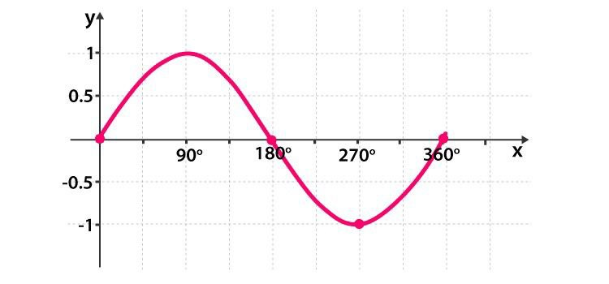
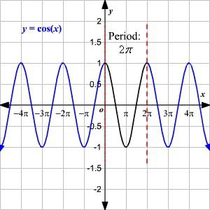
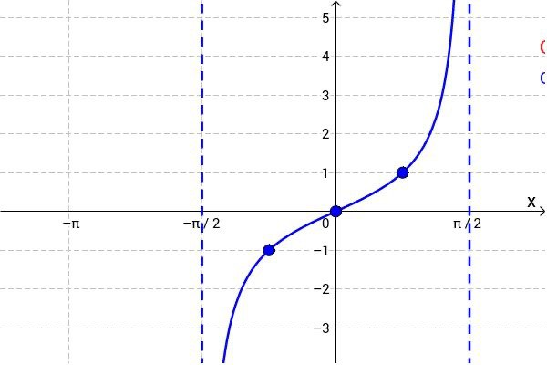

Trigonometric functions are functions that relate the angles of a triangle to the lengths of its sides. The most common trigonometric functions are sine (sin), cosine (cos), and tangent (tan). These functions are essential in understanding various concepts in mathematics, especially in geometry and trigonometry.
The graphs of trigonometric functions show how these functions change with different angles. The most commonly graphed functions are sine, cosine, and tangent.
The graphs of the sine and cosine functions are wavy and periodic, meaning they repeat their shape every 360° (or 2π radians).
Sine Graph: Starts at 0, reaches a maximum of 1 at 90° (π/2 radians), goes back to 0 at 180° (π radians), reaches a minimum of -1 at 270° (3π/2 radians), and returns to 0 at 360° (2π radians).
Cosine Graph: Starts at 1, decreases to 0 at 90° (π/2 radians), reaches a minimum of -1 at 180° (π radians), goes back to 0 at 270° (3π/2 radians), and returns to 1 at 360° (2π radians).
The tangent function graph has a different shape; it repeats every 180° (π radians).
The graph of the tangent function has vertical asymptotes (lines the graph approaches but never touches) at 90° (π/2 radians), 270° (3π/2 radians), etc., where the function is undefined.
Solving trigonometric equations involves finding the angles that make a trigonometric equation true.
Consider the equation sin x = 0.5. To solve this, you need to find the angle x for which the sine is 0.5.
Using the unit circle or a calculator, you find that x = 30° (or x = π/6 radians) is a solution. However, since sine is periodic, x = 30° + 360°n or x = 150° + 360°n (where n is any integer) are also solutions.
To solve more complex equations, you often need to use identities, inverse functions, or graphical methods.
The maximum and minimum points of trigonometric functions refer to the highest and lowest values these functions can reach.
The maximum value of the sine and cosine functions is 1, and the minimum value is -1.
For example, in the sine function y = sin x, the maximum point is at y = 1 and occurs at x = 90° (π/2 radians), while the minimum point is at y = -1 and occurs at x = 270° (3π/2 radians).
The tangent function does not have a maximum or minimum value because it can increase or decrease without bound. However, it has points where the function crosses the x-axis (called zeros) and vertical asymptotes where the function is undefined.
These concepts are fundamental for understanding how trigonometric functions behave and are applied in solving various mathematical problems.
Solving trigonometric equations involves finding the values of the angle(s) that satisfy a given trigonometric equation. These equations often involve functions like sine, cosine, or tangent.
Equation: Solve sin x = 0.5.
Solution:
Equation: Solve cos x = -1/2.
Solution:
Equation: Solve tan x = 1.
Solution:
Equation:Solve, two friends, Rakesh and Vishal started climbing a pyramid-shaped hill. Rakesh climbs 315 m and finds that the angle of depression is 72.3 degrees from his starting point. How high is he from the ground?.
Solution:Let m is the height above the ground.
To find: Value of m
Equation:Solve, A man is observing a pole of height 55 foot. According to his measurement, pole cast a 23 feet long shadow. Can you help him to know the angle of elevation of the sun from the tip of shadow?
Solution:
These steps and examples should help you solve basic trigonometric equations and understand the importance of considering all possible solutions.